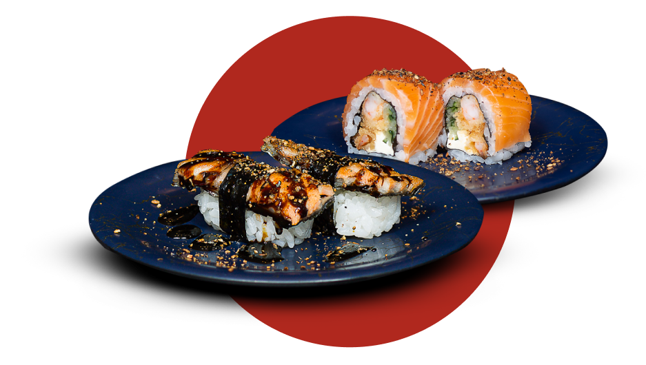
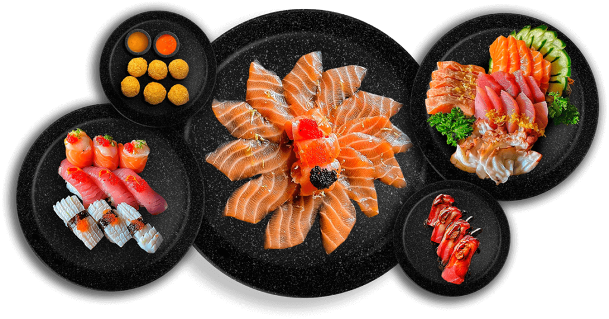

Onde a tradição encontra a inovação.
Delicie-se com o frescor dos melhores ingredientes, habilmente preparados por nossos chefs especializados em sushi e pratos japoneses contemporâneos. No sushizaki, cada refeição é uma celebração de sabores autênticos.
conheça nossa história

sobre nós

Nossa história começa com uma paixão profunda pela autenticidade e tradição culinária japonesa. Inspirados pelas raízes profundas da cozinha do Japão, fundamos o Origins Sushi House como um tributo à rica herança gastronômica do país. Cada prato no nosso cardápio conta uma história, utilizando técnicas tradicionais combinadas com uma abordagem inovadora para criar experiências únicas para nossos clientes.